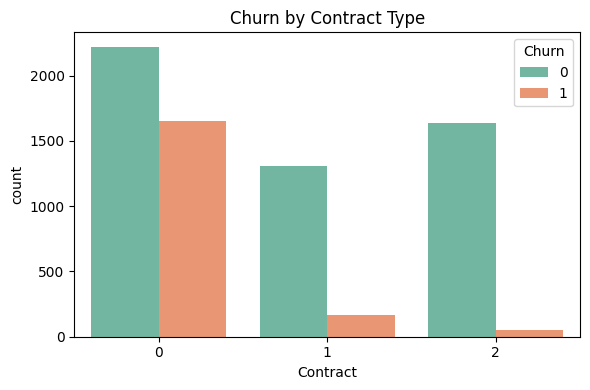
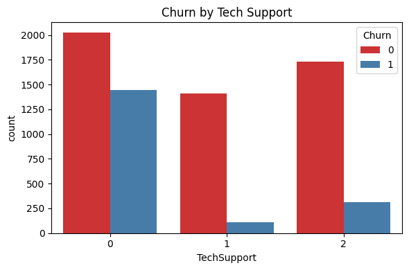
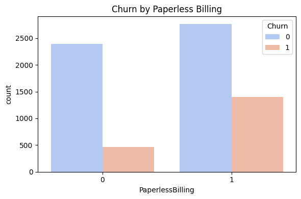
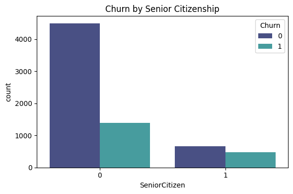
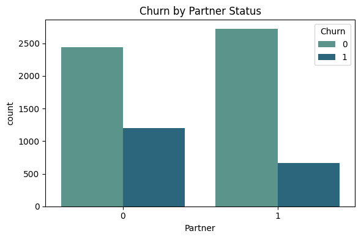
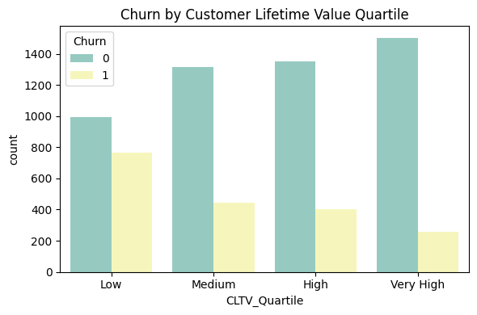

Project Goals
Primary Goal:
Develop a binary classification model to predict whether a customer will cancel their service in the next billing cycle.
Secondary Goal:
Generate business insights through descriptive and inferential analytics, including dashboards that highlight:
- Impact of features such as contract type, tech support, billing profile, etc.;
- Demographic and geographic patterns among high-churn customers;
- Actionable recommendations for targeted customer segments.
🎯 Primary Goal Analysis – Churn Prediction Model
The primary goal of this project was to develop a binary classification model capable of predicting whether a customer will cancel their service in the next billing cycle. The model selected for this task was the Gradient Boosting Classifier, trained using resampled and standardized data.
Model Performance Summary
| Metric | Churn = No (0) | Churn = Yes (1) |
|---|---|---|
| Precision | 0.87 | 0.54 |
| Recall | 0.79 | 0.67 |
| F1-Score | 0.83 | 0.60 |
Overall Accuracy: 0.76 ROC AUC Score: 0.8204
Key Insights
- The model achieved a ROC AUC of 0.8204, indicating good overall discrimination between churners and non-churners.
- Recall for churners (0.67) shows the model can correctly identify 67% of customers who actually churned — a critical metric for proactive retention strategies.
- The precision for churn (0.54) indicates that just over half of predicted churners are true churners, reflecting some trade-off between catching more churners and accepting false positives.
- The F1-score of 0.60 for churn indicates a balanced compromise between precision and recall in this imbalanced classification scenario.
6.4) Secondary Goal:
Generate business insights through descriptive and inferential analytics, including dashboards that highlight:
- Impact of features such as contract type, tech support, billing profile, etc.;
- Demographic and geographic patterns among high-churn customers;
- Actionable recommendations for targeted customer segments.
6.4.1) Churn by Contract Type

The bar plot clearly shows the distribution of customer churn (Churn = 1) across different types of contracts (0 = Month-to-month, 1 = One year, 2 = Two year).
🔍 Key Insights:
- Month-to-month contracts (0) have the highest churn rate. The churn count is nearly as high as the retention count.
- One-year contracts (1) show a significantly lower churn count compared to month-to-month customers.
- Two-year contracts (2) exhibit the lowest churn rate among all types.
📌 Graph Interpretation
- Customers with short-term contracts are more likely to churn, which aligns with the hypothesis that flexibility leads to higher risk of attrition.
- Longer commitment contracts (one or two years) serve as a natural retention mechanism.
💡 Actionable Recommendations:
- Offer incentives or discounts to month-to-month customers to encourage migration to annual plans.
- Use contract length as a key predictor in churn models to detect high-risk segments.
- Launch loyalty programs for short-term users to boost retention and customer commitment.
6.4.2) Churn by Contract Type

🔍 Insight: Technical Support Has a Strong Impact on Churn
- Customers with no Tech Support (0) have the highest churn rate, com uma grande proporção de clientes que saíram (Churn = 1).
- Customers who opted for Tech Support (1 or 2) têm baixas taxas de churn, indicando maior retenção.
- A diferença visual entre os grupos mostra que ter suporte técnico é um forte fator de retenção.
📌 Graph Interpretation
- Providing Tech Support services is strongly correlated with customer retention.
- Customers with no technical assistance are more prone to churn, possibly due to unresolved technical issues or low engagement.
💡 Actionable Recommendations:
- Proactively offer Tech Support to customers at risk.
- Include free or discounted Tech Support trials during the early tenure period.
- Target upselling of Tech Support to customers in churn-prone segments.
6.4.3) Paperless Billing

📌 Graph Interpretation
- Customers who use paperless billing (
PaperlessBilling = 1) show a significantly higher number of cancellations (Churn = 1) compared to those who don’t. - Customers with traditional billing (
PaperlessBilling = 0) have a lower churn rate.
🔍 Key Insights:
- Paperless Billing users tend to churn more frequently.
- Possible explanation: These customers might be more tech-savvy, price-sensitive, or more exposed to competitor promotions.
- Their behavior may also suggest lower brand engagement, as the communication model is entirely digital.
💡 Actionable Recommendations:
- Launch retention campaigns for paperless billing users with a high probability of churn.
- Monitor digital engagement — are these users opening emails, checking their online account, etc.
- Offer exclusive perks or loyalty programs to keep this group engaged and connected to the brand.
6.4.4) Churn by Senior Citizenship

📌 Graph Interpretation
The bar chart shows the distribution of churn among senior citizens (SeniorCitizen = 1) and non-senior customers (SeniorCitizen = 0), with the churn status represented by hue.
- Non-Senior Customers (0):
- Represent the majority of the customer base.
-
Show a significant number of churns (Churn = 1), although more customers stay.
-
Senior Citizens (1):
- Comprise a smaller segment of the base.
- Display a proportionally higher churn rate than non-seniors.
- The bar heights for churned vs non-churned are more balanced for this group.
🔍 Key Insights:
- Churn Risk by Age Group:
- Senior citizens are more likely to churn relative to their representation in the dataset.
-
This demographic might be more sensitive to service quality, usability, or pricing.
-
Marketing & Retention Implication:
- Senior customers should be considered a priority target for personalized retention campaigns.
- Simplified billing, improved support, and loyalty incentives could reduce churn risk in this group.
💡 Actionable Recommendations:
- Tailor customer experience for older clients.
-
Offer additional onboarding or support for new senior customers.
-
Visualization & Communication:
- This dashboard-style visualization supports data-driven storytelling for business stakeholders.
6.4.5) Churn by Partner status

📌 Graph Interpretation
The visualization shows the relationship between customer churn and whether the customer has a partner (1) or not (0).
🔍 Key Insights:
- Customers without a partner (Partner = 0) have a higher churn rate than those with a partner.
- Among customers with a partner (Partner = 1), the number of churned customers is significantly lower, despite a similar total population size.
- This indicates that partnership status may contribute to customer stability, possibly due to shared financial responsibilities or stronger service value perception within households.
💡 Actionable Recommendations:
- Create custom retention offers for customers without a partner, who show higher churn risk.
- Use Partner status in churn prediction models to improve accuracy.
- Design targeted messaging that emphasizes independence, convenience, and personalized value for single customers.
6.4.6) Churn by Churn by Customer Lifetime Value Quartile

📌 Graph Interpretation
- The CLTV metric, represented by TotalCharges, is a strong inverse indicator of churn.
- Lower-revenue customers are more volatile and more likely to churn.
- Retention strategies should prioritize high CLTV customers at risk of churning (combining churn probability × CLTV).
🔍 Key Insights:
- Customers in the "Low CLTV" quartile show the highest churn rate compared to other quartiles.
- As CLTV increases, the number of churners decreases significantly.
- The "Very High CLTV" group has the lowest churn count, indicating better customer retention among high-value clients.
💡 Suggested Actions
- Implement personalized offers for customers with high CLTV and moderate churn probability.
- Use predictive models to monitor changes in CLTV and churn behavior across segments.
- Design loyalty programs to incentivize longevity and increase total customer value.
💡 Summary of Actionable Business Insights
📦 Contract Type
- Offer discounts or upgrades to month-to-month customers to encourage migration to longer contracts.
- Use contract duration as a key churn predictor.
- Develop loyalty programs for short-term clients.
🛠️ Tech Support
- Proactively offer Tech Support to at-risk customers.
- Provide free or discounted trials during early months.
- Target upselling Tech Support in high-churn segments.
💻 Paperless Billing
- Launch retention campaigns for paperless billing users with high churn risk.
- Monitor digital engagement behavior (email opens, logins).
- Provide exclusive digital perks or rewards for this tech-savvy group.
👵 Senior Citizenship
- Offer tailored onboarding and support for senior customers.
- Simplify interfaces and billing for older demographics.
- Personalize retention messaging for this sensitive user group.
💞 Partner Status
- Create custom retention offers for customers without a partner.
- Use Partner status in predictive models to improve segmentation.
- Develop messaging that emphasizes autonomy and value for singles.
💰 Customer Lifetime Value (CLTV)
- Prioritize high CLTV customers with rising churn risk.
- Monitor CLTV × churn probability to guide retention investments.
- Implement VIP programs or loyalty incentives to boost lifetime value.